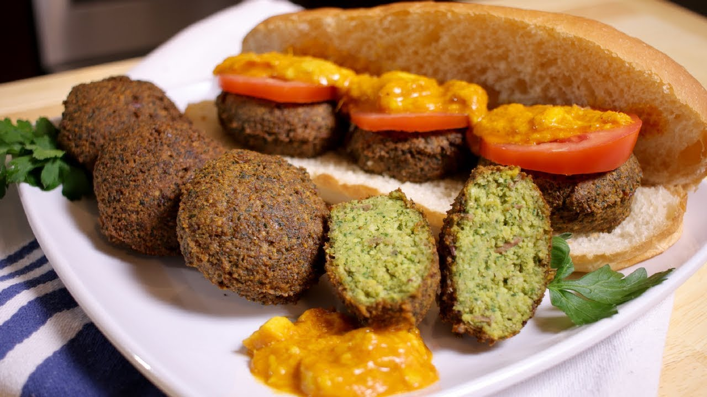

Falafel Recipe

Description
Falafel is a popular Middle Eastern dish of deep-fried or baked balls or
patties made from ground chickpeas or fava beans, herbs, and spices.
The fritters are often shaped into balls, patties, or doughnut shapes and
can be served as an appetizer or in a variety of ways.
Ingredients
- 1 cup Dry Chick Peas
- 1/2 cup Dry Fava Beans
- 1 cup Fresh Parsley (finely chopped)
- 1 Onion (diced)
- 1 teaspoon Salt
- 1 teaspoon Ground Cumin
- 1 teaspoon Ground Coriander
- 1/2 teaspoon Black Pepper
- 1 clove Garlic
- 1 teaspoon Baking Powder
- 1 teaspoon Baking Soda
- Light Olive Oil for frying
Steps
- Add cold water in the chickpeas & soak overnight.
- Add cold water in the fava beans & soak overnight.
-
Rinse & strain the chickpeas & fava beans after they have been soaked
overnight.
- Place the fava beans in a blender & process, place in a bowl.
- Process half of the chickpeas and place in the bowl.
- Add the rest of the chickpeas, parsley, onion & spices.
- Add the minced garlic.
- Process all together & place in the bowl.
- Mix all together with your hands.
- Store half of the mixture to use another time.
-
Only add the baking powder & baking soda when you are ready to fry the
falafel, mix together.
- Pour some oil in a saucepan & heat until hot.
- Add spoonfuls of the mixture using a falafel mould.
- Release in the oil, fry & flip on both sides until golden.
- Strain to remove excess oil & place on a paper towel dish.